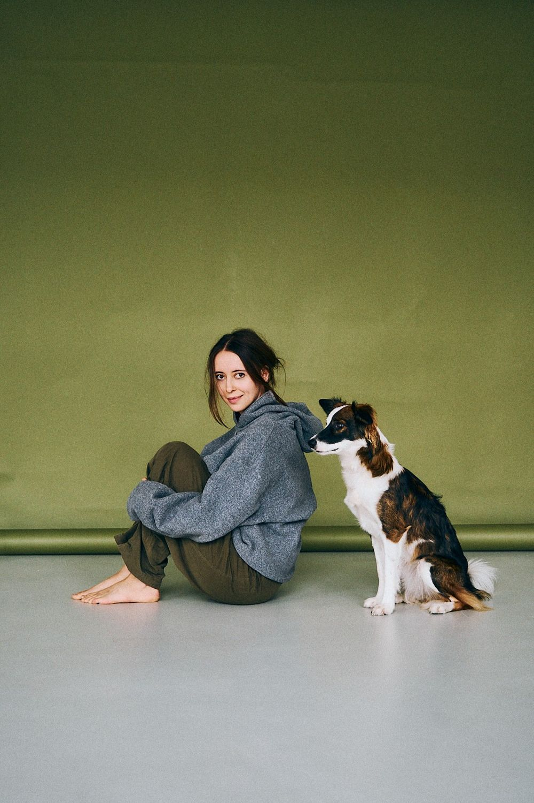

Привіт! Я Саша — дизайнерка, арт-директорка та дослідниця. Це мій цифровий сад з живими нотатками з Obsidian про цікавість, освіту, подив та дизайн.
Кожна точка — нотатка. Наведи, щоб прочитати, натисни, щоб відкрити.Кожна точка — нотатка. Торкнись, щоб прочитати, і ще раз, щоб відкрити.
Усі нотатки, теги й посилання між ними. Колір — тема, розмір — довжина нотатки. Тягни точки, гортай і масштабуй мапу, програй, як ріс сад.
Живі нотатки з мого Obsidian-сховища: від перших ескізів до завершених текстів. Обери тему або просто блукай.
Тексти, які вже дозріли до читання від початку до кінця. Зараз це розділ Blog Notes.
Книжки й тексти, які я законспектувала в Obsidian, цитати, що чіпляються, і закладки на чужі сади. Товщина корінця — це довжина конспекту. Розстав книжки як хочеш і натисни на корінець, щоб відкрити конспект поруч.